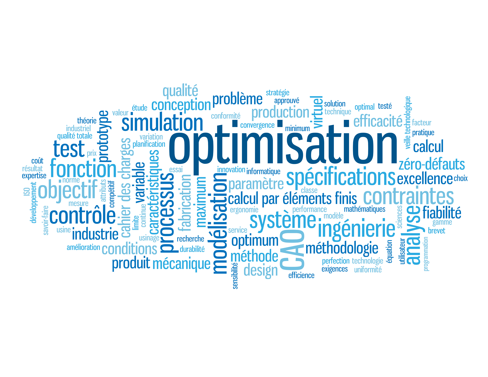

Master CSMI : Calcul Scientifique et Mathématiques de l’Innovation 2023-2024
Le Master CSMI est une formation de haut niveau en mathématiques appliquées et en informatique de l’Université de Strasbourg.
- Intelligence artificielle (IA)
-
Embarquez pour un voyage avec notre parcours de master en mathématiques appliquées et en informatique, où des cours d’IA de pointe tels que l’apprentissage scientifique de la machine (SciML) vous dotent des compétences indispensables pour relever les défis du monde réel.
- Modélisation, Simulation, Optimisation (MSO)
-
Explorez le domaine de la modélisation, de la simulation et de l’optimisation avec notre filière de master, où des cours tels que les méthodes numériques pour les équations différentielles partielles et le contrôle de l’optimisation fournissent une base académique solide, vous équipant de compétences informatiques pour relever les défis du monde réel.

- Apprentissage par projets
-
Embarquez pour un voyage d’apprentissage pratique avec notre master, où certains cours basés sur des projets, y compris des collaborations avec l’industrie et la recherche universitaire, fournissent un programme d’études pratique, vous dotant de compétences de résolution de problèmes du monde réel, et vous préparant à la réussite académique et professionnelle dans un environnement d’apprentissage collaboratif et appliqué.

- Calcul haute performance (HPC)
-
Découvrez dans notre filière de master le calcul de haute performance, où les cours sur MPI, OpenMP, GPU Computing, et Hybrid Computing vous donnent l’expertise nécessaire pour exploiter les ressources de calcul, conduisant à des percées dans les domaines à forte intensité de calcul et de données.
- Traitement et fouille de données
-
Embarquez avec notre master pour découvrir le traitement, l’exploitation et la visualisation des données, où les cours d’analyse avancée et d’apprentissage automatique constituent une base académique solide, vous permettant d’acquérir les compétences nécessaires pour extraire des informations significatives à partir de vastes ensembles de données.

- Traitement du signal et des images
-
Embarquez pour un voyage d’apprentissage avec notre filière de master en traitement des images et des signaux, où des cours sur mesure vous initient à l’analyse des données visuelles et auditives, vous permettant d’acquérir les compétences nécessaires pour transformer des données brutes en informations significatives.